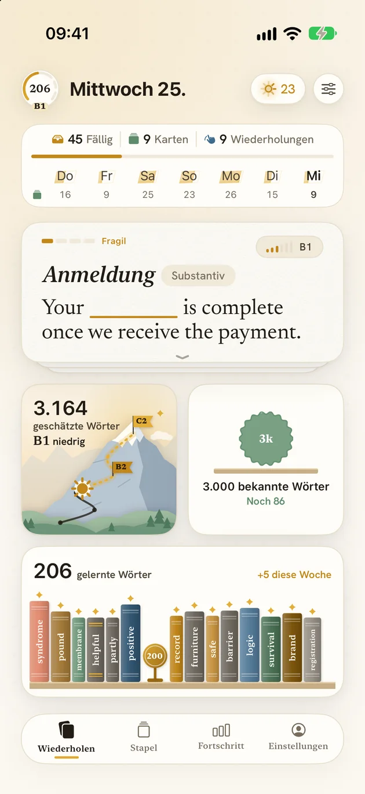
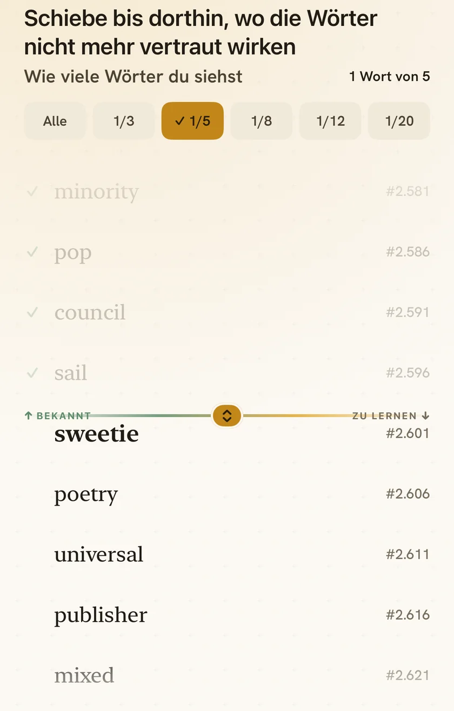
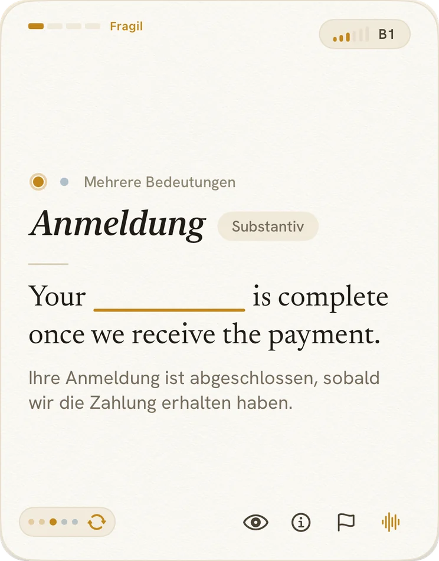
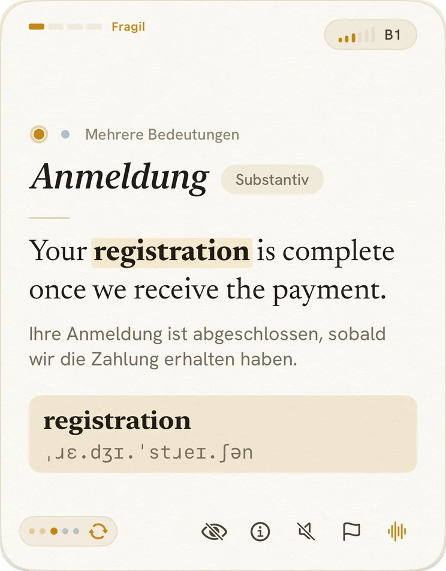
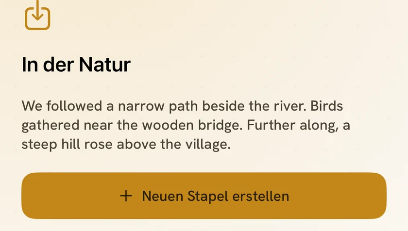
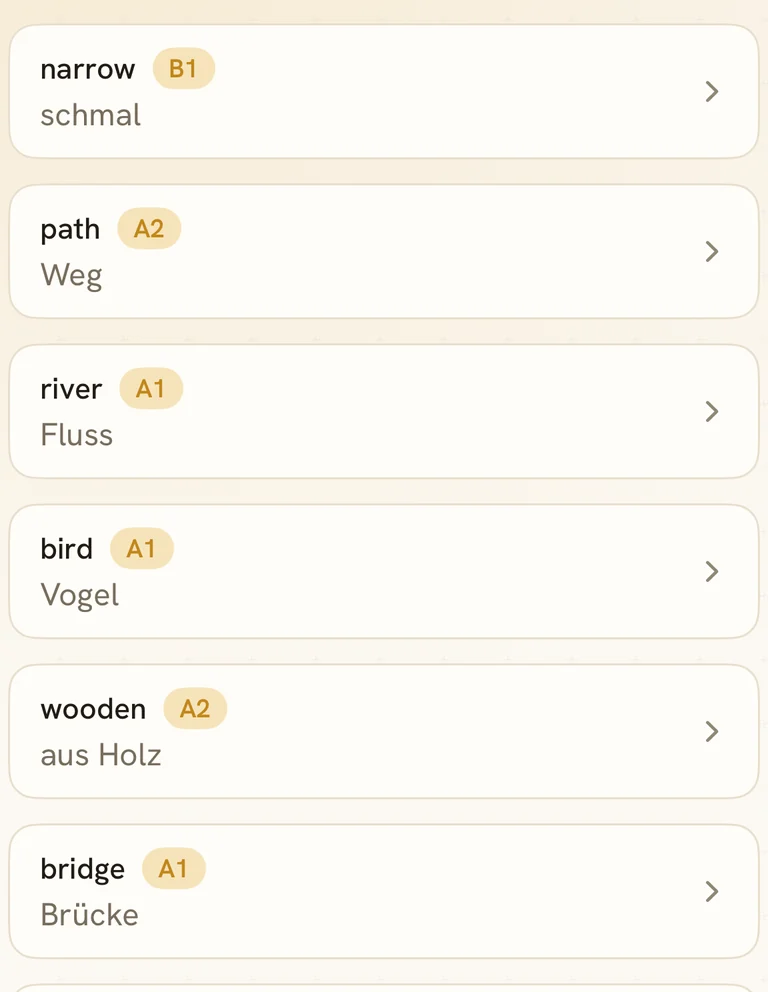
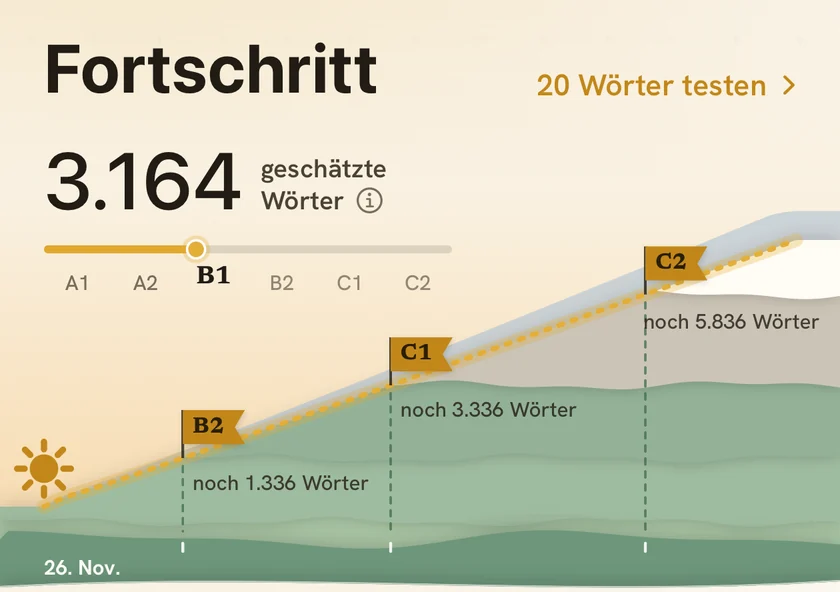
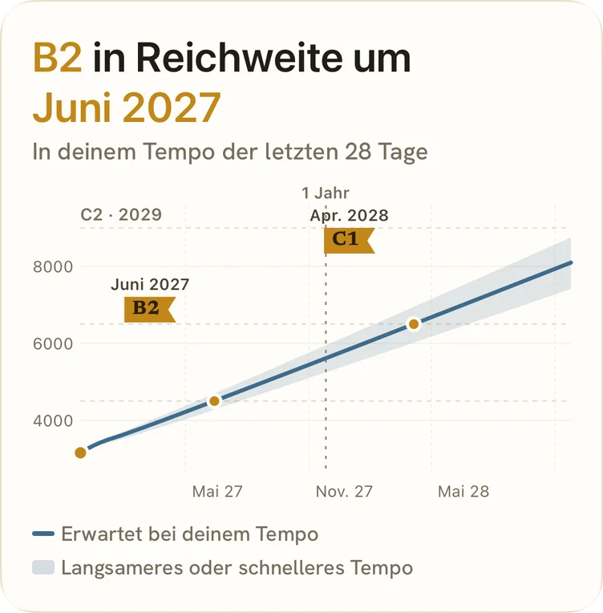
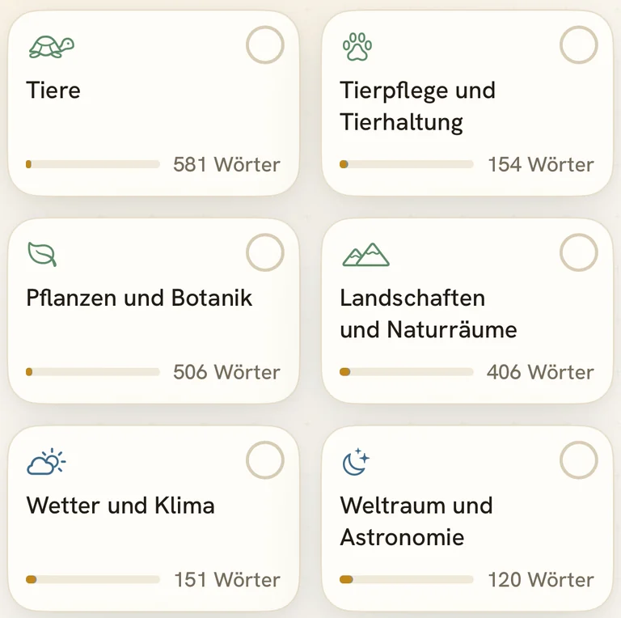

FragilA2
ReiseSubstantiv
Our train took us through snowy mountains.
Unsere Zugreise führte uns durch verschneite Berge.
journeyˈdʒɝ.ni
Englischer Wortschatz · Fürs iPhone
Versuch zu antworten, deck dann das Wort auf und sieh, wie es in einem Satz verwendet wird. Vocalibur plant die Wiederholungen nach deinen Antworten, damit du dir das Wort merkst.
Kostenloser Plan ohne Zeitlimit. Ohne Werbung. Ohne Konto.

Welche Wörter du lernst und wann du sie wiederholst: Darum kümmert sich Vocalibur. Du musst dich nur noch an das Wort erinnern.
Welche Wörter lernen?
Scrolle durch die Wortliste, vom häufigsten bis zum seltensten Wort, und wähle deinen Ausgangspunkt. Danach führt Vocalibur neue Wörter nach Häufigkeit ein: 30.000 Karten, Orientierung nach Niveau und 55 Themen.

Wie wiederholen?
Jede Karte zeigt einen Hinweis und einen Lückensatz. Deck die Antwort bei Bedarf auf und wische die Karte dann je nachdem, was du wusstest.
Das Aufdecken zählt nicht: Es zählt nur, was du wusstest.
GemeistertVerlässt die Wiederholungen.
Kenne ichKommt später wieder.
ArchivierenVerlässt deinen Lernpfad.
Zu wiederholenKommt bald wieder.
FragilA2
ReiseSubstantiv
Our train took us through snowy mountains.
Unsere Zugreise führte uns durch verschneite Berge.
journeyˈdʒɝ.ni
FragilB1
zuverlässigAdjektiv
We need a car for our daily commute.
Wir brauchen ein zuverlässiges Auto für unseren täglichen Arbeitsweg.
reliableɹɪ.ˈlaɪ.ə.bəl
FragilA1
sich etwas ausleihenVerb
Could I your umbrella until tomorrow?
Könnte ich mir deinen Regenschirm bis morgen ausleihen?
borrowˈbɑ.ˌɹoʊ
Tippe auf die Karte, um das Wort aufzudecken, und wische sie dann. Mit der Tastatur: Eingabetaste, dann die Pfeiltasten.
Wann wiederholen?
Mit FSRS-6 schätzt Vocalibur, wie wahrscheinlich du jede Karte vergisst: Ein Wort, das dir entfällt, kommt früher wieder, und erfolgreiche Abrufe vergrößern die Abstände. FSRS zielt auf 20 bis 30 % weniger Wiederholungen als der klassische SM-2-Algorithmus ab, bei vergleichbarer Erinnerungsleistung.
Ein Beispiel, berechnet mit FSRS-6 und seinen Standardeinstellungen, für ein Wort, das bei jeder Wiederholung gewusst wird. Jede Fahne ist eine Wiederholung: Sie kommt, wenn die Chance, sich an das Wort zu erinnern, auf etwa 90 % sinkt. Fahr mit dem Finger über die Kurve.
Im Kontext
Jede Karte verbindet einen Beispielsatz, seine Übersetzung und eine Definition. Aufgedeckt zeigt sie weitere Beispiele und die anderen Bedeutungen des Worts; im Schreibmodus tippst du die Antwort und übst die Rechtschreibung.
„bank“ als Geldinstitut und „bank“ als Flussufer haben je eine eigene Karte: Du lernst die Verwendung, nicht nur die Form.


Sprachwiederholung
Hör dir den Hinweis an und antworte auf Englisch: Vocalibur prüft deine Antwort und macht mit der nächsten Karte weiter. Setz deine Kopfhörer auf und sperre dein iPhone: Du übst einfach weiter.
Die Erkennung läuft auf deinem iPhone, mit den Stimmen von Apple. Im kostenlosen Plan enthalten.

Deine Lektüre
Füge einen englischen Text ein, fotografiere eine Seite oder teile eine Passage aus Safari. Vocalibur erkennt die Wörter aus seinem Katalog; du wählst aus, welche du lernst.
Der Text wird auf deinem iPhone analysiert und nicht dauerhaft gespeichert: Nur die gewählten Wörter kommen in deinen Stapel.


Deine Fortschritte
Sieh deine Lernaktivität, die Wörter im Lernprozess und anstehende Wiederholungen. Dein geschätzter Wortschatz beginnt bei den Wörtern, die du als bekannt angibst, und wird mit deinen Antworten und einigen selteneren Testwörtern genauer.
Mit Premium schätzt deine Kurve, wann du jedes Niveau bis C2 bei deinem tatsächlichen Tempo erreichst, und ein Schieberegler simuliert ein anderes Tempo.


Themen Premium
Mit Premium wählst du aus 55 Themen, um deinen Wortschatz gezielt aufzubauen: Tiere, Gesundheit, Reisen oder Sport. Ohne Premium bleiben alle Themen in deinem Lernpfad gemischt.

Aktives Abrufen und verteiltes Wiederholen wurden in echten Lernsituationen untersucht. Das ist keine unabhängige Bewertung der Wirksamkeit von Vocalibur.
Die Studien und ihre Grenzen lesen (auf Französisch)Ein Erkennungsquiz ohne Anmeldung. Du siehst deine Antworten und ihre Erklärung, aber kein Englischniveau, das aus wenigen Fragen abgeleitet wird.
Etwa 3 Minuten · Keine Datenübertragung
Für das Quiz wird JavaScript benötigt. Der Rest der Website funktioniert auch ohne.
Vocalibur gibt es im App Store, fürs iPhone. Ohne Konto, ohne Werbung, ohne Zeitlimit.